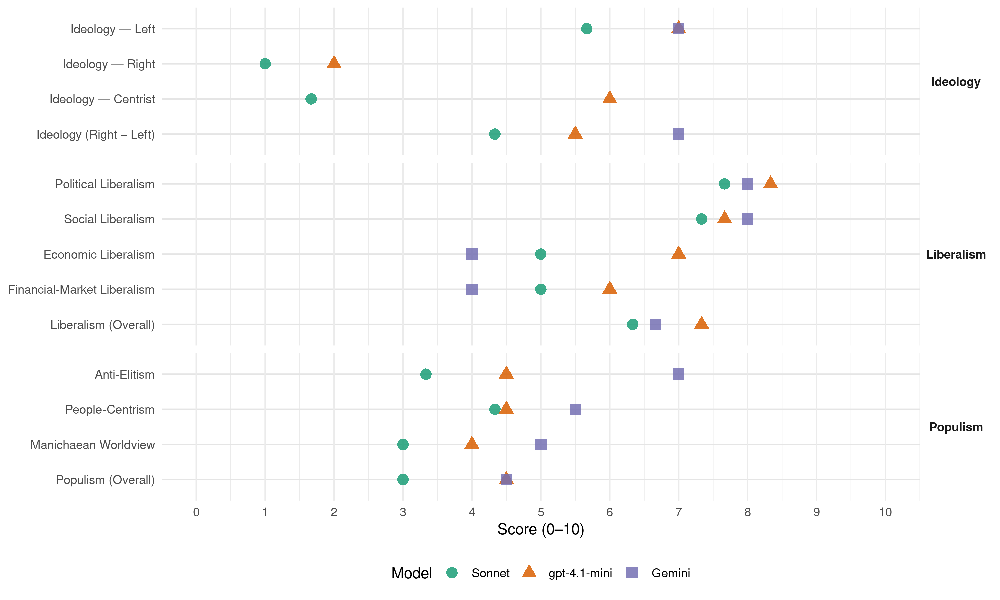

PSOE (Spain, 1982)
manifesto_id 33320_198210
Get full text: This site shows derived annotations and short verbatim quotes only. The full manifesto text is © Manifesto Project / WZB — obtain it via manifesto-project.wzb.eu using the manifesto_id above.
Headline scores
| Dimension | Sonnet | gpt-4.1-mini | Gemini |
|---|---|---|---|
| Populism (Overall) | 3.0 | 4.5 | 4.5 |
| Anti-Elitism | 3.3 | 4.5 | 7.0 |
| People-Centrism | 4.3 | 4.5 | 5.5 |
| Manichaean Worldview | 3.0 | 4.0 | 5.0 |
| Ideology (Right − Left) | 4.3 | 5.5 | 7.0 |
| Liberalism (Overall) | 6.3 | 7.3 | 6.7 |
| Political Liberalism | 7.7 | 8.3 | 8.0 |
| Social Liberalism | 7.3 | 7.7 | 8.0 |
| Economic Liberalism | 5.0 | 7.0 | 4.0 |
| Financial-Market Liberalism | 5.0 | 6.0 | 4.0 |
Evidence per dimension
Economic Liberalism
Gemini · score 5.0 · mixed · chunk 1
“planificación y el mercado son instrumentos fundamentales”
2. LA PLANIFICACIÓN CONCERTADA La planificación y el mercado son instrumentos fundamentales en el desarrollo de una política racional para lograr el
Gemini · score 4.0 · verified · chunk 2
“concierto con la iniciativa privada”
se facilitará su producción mediante concierto con la iniciativa privada, fomentando las que se ofrezcan
gpt-4.1-mini · score 7.0 · verified · chunk 1
“la inversión pública actuará como motor de la economía”
La inversión pública actuará como motor de la economía. En el Presupuesto de cada año se preverá un Fondo de Acción Coyuntural para la creación de puestos de trabajo, cuya aplicación será objeto de negociación con los interlocutores sociales.
gpt-4.1-mini · score 7.0 · verified · chunk 2
“la redistribución de la renta personal y regional”
El Estado ha de ser el garante de la convivencia democrática y de la solidaridad entre los españoles y entre las nacionalidades y regiones de España. Pero tiene, además, según la Constitución, la obligación de promover las condiciones más favorables para el progreso social y económico y para una distribución más equitativa de la renta personal y regional.
gpt-4.1-mini · score 7.0 · verified · chunk 3
“reforma presupuestaria y del gasto público”
…El Gobierno socialista, consciente también de la crisis de adaptación que hoy viven las Administraciones Públicas, desarrollará un programa de reformas tendentes a introducir la inquietud y la capacidad por la gestión eficaz de los servicios. A tal efecto: - Procederá a la reforma presupuestaria y del gasto público…
Sonnet · score 5.0 · mixed · chunk 1
“planificación y el mercado son instrumentos fundamentales”
La planificación y el mercado son instrumentos fundamentales en el desarrollo de una política racional para lograr el máximo bienestar y el óptimo aprovechamiento de los recursos del país
Sonnet · score 5.0 · mixed · chunk 2
“fomentando las competencias municipales en la regulación del mercado del suelo”
fomentando las competencias municipales en la regulación del mercado del suelo, tales como: a) los Planes de Urbanismo que señalarán los suelos destinados obligatoriamente a edificación de viviendas de Protección Oficial
Sonnet · score 5.0 · verified · chunk 3
“reforma presupuestaria y del gasto público”
Procederá a la reforma presupuestaria y del gasto público, en los términos contemplados en otro lugar de este programa.
Financial-Market Liberalism
Gemini · score 4.0 · verified · chunk 1
“corrija los efectos menos deseados de la liberalización”
necesario plantear una nueva política que corrija los efectos menos deseados de la liberalización. Los objetivos primordiales de la misma han de
Gemini · score 4.0 · verified · chunk 2
“acceso a las diferentes modalidades de crédito”
fomentará la creación, facilitando y racionalizando el acceso a las diferentes modalidades de crédito, cumpliendo rigurosamente los controles
gpt-4.1-mini · score 6.0 · verified · chunk 1
“la política financiera… potenciar la competencia en la totalidad del sistema”
Por ello, debe adoptarse una política en la que colaboren las autoridades financieras con las entidades privadas más importantes a través de acuerdos generales que fijen marcos a la actuación pública y privada.
Sonnet · score 5.0 · mixed · chunk 1
“hacer más flexibles los tipos de interés”
Los objetivos son: hacer más flexibles los tipos de interés, consolidar la ampliación de la gama de activos financieros, adaptar nuestras instituciones a la CEE, reforzar la responsabilidad de los dirigentes
Sonnet · score 5.0 · verified · chunk 2
“reducción de los tipos de interés y el alargamiento de los plazos”
Se establecerán unas mejores condiciones financieras mediante la reducción de los tipos de interés y el alargamiento de los plazos.
Sonnet · score 5.0 · verified · chunk 3
“crédito oficial destinado a las Entidades Locales”
Se potenciará el crédito oficial destinado a las Entidades Locales adaptando sus condiciones a las necesidades y características de su actividad.
Political Liberalism
Gemini · score 8.0 · verified · chunk 1
“desarrollar plenamente la estructura democrática del Estado”
parálisis política actual, salir de la crisis económica¡ desarrollar plenamente la estructura democrática del Estado y las libertades garantizadas por la Constitución, así
Gemini · score 8.0 · verified · chunk 2
“garantizar las libertades de los españoles”
La actividad legislativa resulta hoy necesaria para garantizar las libertades de los españoles y para promover un progreso humano
Gemini · score 8.0 · verified · chunk 3
“el principio de división de poderes”
situación actual que vulnera el principio de división de poderes e introduce el partidismo
gpt-4.1-mini · score 8.0 · verified · chunk 1
“desarrollar plenamente la estructura democrática del Estado y las libertades garantizadas por la Constitución”
salir de la crisis económica¡ desarrollar plenamente la estructura democrática del Estado y las libertades garantizadas por la Constitución, así como racionalizar el ineficaz aparato de la Administración Pública para luchar contra el paro y las desigualdades sociales.
gpt-4.1-mini · score 9.0 · verified · chunk 2
“la protección de los derechos fundamentales de los ciudadanos en condiciones igualitarias”
La protección de los derechos fundamentales de los ciudadanos en condiciones igualitarias constituye no sólo un límite de la actuación estatal, sino ante todo el mismo fundamento del Estado. la condición de justicia que dota de legitimidad suficiente al ejercicio del poder legislativo, ejecutivo y judicial y, en definitiva, a la existencia misma de la organización política.
gpt-4.1-mini · score 8.0 · verified · chunk 3
“la división de poderes e introduce el partidismo en la Administración”
…vulnerar el principio de división de poderes e introduce el partidismo en la Administración. Revisará de inmediato todas aquellas compatibilidades que comprometen la credibilidad de la Administración…
Sonnet · score 7.0 · verified · chunk 1
“desarrollar plenamente la estructura democrática”
Los españoles tenemos que superar la parálisis política actual, salir de la crisis económica, desarrollar plenamente la estructura democrática del Estado y las libertades garantizadas por la Constitución
Sonnet · score 8.0 · verified · chunk 2
“la libertad de expresión y prensa, que representa una de las claves de la sociedad democrática”
la protección de los derechos antes mencionados no ahogará la libertad de expresión y prensa, que representa una de las claves de la sociedad democrática y cuyo ejercicio no requiere una normativa excesivamente reglamentista
Sonnet · score 8.0 · verified · chunk 3
“la democracia española”
Culminar la transformación del Estado centralista en un Estado garantizador… constituye una de las tareas más hermosas y complejas de la democracia española.
Liberalism (Overall)
Gemini · score 6.0 · verified · chunk 1
“modelo de convivencia social, de libertades y derechos”
Nuestro ordenamiento constitucional plasmó con total acierto un modelo de convivencia social, de libertades y derechos individuales y colectivos, que ofrece el marco ideal
Gemini · score 6.0 · verified · chunk 2
“garantizar las libertades de los españoles”
La actividad legislativa resulta hoy necesaria para garantizar las libertades de los españoles y para promover un progreso humano
Gemini · score 8.0 · verified · chunk 3
“el principio de división de poderes”
situación actual que vulnera el principio de división de poderes e introduce el partidismo
gpt-4.1-mini · score 7.0 · verified · chunk 1
“desarrollar plenamente la estructura democrática del Estado y las libertades garantizadas por la Constitución”
salir de la crisis económica¡ desarrollar plenamente la estructura democrática del Estado y las libertades garantizadas por la Constitución, así como racionalizar el ineficaz aparato de la Administración Pública para luchar contra el paro y las desigualdades sociales.
gpt-4.1-mini · score 8.0 · verified · chunk 2
“la protección de los derechos fundamentales de los ciudadanos en condiciones igualitarias”
La protección de los derechos fundamentales de los ciudadanos en condiciones igualitarias constituye no sólo un límite de la actuación estatal, sino ante todo el mismo fundamento del Estado. la condición de justicia que dota de legitimidad suficiente al ejercicio del poder legislativo, ejecutivo y judicial y, en definitiva, a la existencia misma de la organización política.
gpt-4.1-mini · score 7.0 · verified · chunk 3
“la división de poderes e introduce el partidismo en la Administración”
…vulnerar el principio de división de poderes e introduce el partidismo en la Administración. Revisará de inmediato todas aquellas compatibilidades que comprometen la credibilidad de la Administración…
Sonnet · score 6.0 · verified · chunk 1
“libertades garantizadas por la Constitución”
desarrollar plenamente la estructura democrática del Estado y las libertades garantizadas por la Constitución, así como racionalizar el ineficaz aparato de la Administración Pública
Sonnet · score 7.0 · verified · chunk 2
“la libertad de expresión y prensa, que representa una de las claves de la sociedad democrática”
la protección de los derechos antes mencionados no ahogará la libertad de expresión y prensa, que representa una de las claves de la sociedad democrática y cuyo ejercicio no requiere una normativa excesivamente reglamentista
Sonnet · score 6.0 · verified · chunk 3
“la democracia española”
Culminar la transformación del Estado centralista en un Estado garantizador… constituye una de las tareas más hermosas y complejas de la democracia española.
Anti-Elitism
Gemini · score 7.0 · verified · chunk 1
“frustradas por la vacilante política de los gobiernos recientes”
estructuras del Estado, de la sociedad y de la economía han sido repetidamente frustradas por la vacilante política de los gobiernos recientes, que han contemporizado con los grupos más reaccionarios
gpt-4.1-mini · score 7.0 · verified · chunk 1
“los grupos más reaccionarios y egoístas”
han contemporizado con los grupos más reaccionarios y egoístas, preocupándose más de sus propias disensiones internas que de los auténticos problemas de la sociedad.
gpt-4.1-mini · score 2.0 · verified · chunk 2
“No es, pues, propiedad del Estado, ni de ninguna administración o elite”
La cultura es tarea del conjunto de la sociedad, que debe desarrollarse desde plataformas y asociaciones ciudadanas. No es, pues, propiedad del Estado, ni de ninguna administración o elite, ni una dádiva otorgada desde arriba. Es el fruto de una sociedad rica y creadora en la que el Estado debe promover el derecho de todos los ciudadanos a la cultura y superar toda discriminación.
Sonnet · score 6.0 · verified · chunk 1
“grupos más reaccionarios y egoístas”
frustradas por la vacilante política de los gobiernos recientes, que han contemporizado con los grupos más reaccionarios y egoístas, preocupándose más de sus propias disensiones internas
Sonnet · score 2.0 · verified · chunk 2
“No es, pues, propiedad del Estado, ni de ninguna administración o elite”
La cultura es tarea del conjunto de la sociedad… No es, pues, propiedad del Estado, ni de ninguna administración o elite, ni una dádiva otorgada desde arriba.
Sonnet · score 2.0 · verified · chunk 3
“los sucesivos gobiernos de UCD, que en este campo tampoco han estado a la altura de su responsabilidad histórica”
La desaparición de los límites… no ha sido aprovechada por los sucesivos gobiernos de UCD, que en este campo tampoco han estado a la altura de su responsabilidad histórica.
Ideology — Centrist
gpt-4.1-mini · score 6.0 · verified · chunk 1
“la colaboración decidida de los ciudadanos y su participación en el esfuerzo común”
La realización de nuestro proyecto exige, junto a una firme acción de Gobierno, la colaboración decidida de los ciudadanos y su participación en el esfuerzo común, incorporándose al cambio.
gpt-4.1-mini · score 6.0 · verified · chunk 2
“el Estado ha de intervenir en la vida social, pero su necesaria reforma ha de partir también del protagonismo social”
Los socialistas insistimos en el protagonismo de la sociedad. El Estado pertenece constitucionalmente a los ciudadanos. No corresponde a ninguna burocracia ni civil ni militar. Cuando esto se olvida, los intereses burocráticos se anteponen a los verdaderos intereses públicos, los aparatos burocráticos crecen más allá de lo razonable, se derrochan los recursos públicos, se debilita la creatividad de la sociedad y se tiende a llevar al ciudadano a una actitud pasiva de beneficiario o asistido. Es preciso reaccionar frente a todo esto;; el Estado ha de intervenir en la vida social, pero su necesaria reforma ha de partir también del protagonismo social, ha de basarse en la participación ciudadana, en la demanda social de los cambios necesarios para que el Estado se halle de verdad al servicio de los ciudadanos.
Sonnet · score 2.0 · verified · chunk 1
“voluntad de progreso y de solidaridad”
para que los ciudadanos españoles recuperen su protagonismo directo y relancen su voluntad de progreso y de solidaridad
Sonnet · score 1.0 · verified · chunk 2
“intereses burocráticos se anteponen a los verdaderos intereses públicos”
Cuando esto se olvida, los intereses burocráticos se anteponen a los verdaderos intereses públicos, los aparatos burocráticos crecen más allá de lo razonable
Sonnet · score 2.0 · verified · chunk 3
“fondos públicos estén realmente al servicio de los ciudadanos”
Hay que hacer eficaz a la Administración para garantizar que los fondos públicos estén realmente al servicio de los ciudadanos.
Ideology — Left
Gemini · score 7.0 · verified · chunk 1
“soportando una inaceptable desigualdad social, cultural y económica”
puesto que la sociedad española sigue soportando una inaceptable desigualdad social, cultural y económica, y se ha hecho más intensa porque se han
gpt-4.1-mini · score 7.0 · verified · chunk 1
“la sociedad española sigue soportando una inaceptable desigualdad social, cultural y económica”
Esa necesidad de cambio viene de lejos, puesto que la sociedad española sigue soportando una inaceptable desigualdad social, cultural y económica, y se ha hecho más intensa porque se han perdido unos años preciosos para atajar estos males endémicos.
gpt-4.1-mini · score 7.0 · verified · chunk 2
“la redistribución de la renta personal y regional”
El Estado ha de ser el garante de la convivencia democrática y de la solidaridad entre los españoles y entre las nacionalidades y regiones de España. Pero tiene, además, según la Constitución, la obligación de promover las condiciones más favorables para el progreso social y económico y para una distribución más equitativa de la renta personal y regional.
Sonnet · score 7.0 · verified · chunk 1
“inaceptable desigualdad social, cultural y económica”
la sociedad española sigue soportando una inaceptable desigualdad social, cultural y económica, y se ha hecho más intensa porque se han perdido unos años preciosos
Sonnet · score 6.0 · verified · chunk 2
“redistribuyendo territorialmente los centros y restantes medios”
La compensación de la desigualdad social, económica y geográfica de oportunidades, redistribuyendo territorialmente los centros y restantes medios de manera equitativa, será un objetivo básico.
Sonnet · score 4.0 · verified · chunk 3
“solidaridad con los pueblos que luchan por la libertad”
La solidaridad con los pueblos que luchan por la libertad, ya que para la política exterior desde el punto de vista socialista es consustancial la solidaridad internacional.
Ideology (Right − Left)
Gemini · score 7.0 · verified · chunk 1
“soportando una inaceptable desigualdad social, cultural y económica”
puesto que la sociedad española sigue soportando una inaceptable desigualdad social, cultural y económica, y se ha hecho más intensa porque se han
gpt-4.1-mini · score 6.0 · verified · chunk 1
“la colaboración decidida de los ciudadanos y su participación en el esfuerzo común”
La realización de nuestro proyecto exige, junto a una firme acción de Gobierno, la colaboración decidida de los ciudadanos y su participación en el esfuerzo común, incorporándose al cambio.
gpt-4.1-mini · score 5.0 · verified · chunk 2
“el Estado ha de intervenir en la vida social, pero su necesaria reforma ha de partir también del protagonismo social”
Los socialistas insistimos en el protagonismo de la sociedad. El Estado pertenece constitucionalmente a los ciudadanos. No corresponde a ninguna burocracia ni civil ni militar. Cuando esto se olvida, los intereses burocráticos se anteponen a los verdaderos intereses públicos, los aparatos burocráticos crecen más allá de lo razonable, se derrochan los recursos públicos, se debilita la creatividad de la sociedad y se tiende a llevar al ciudadano a una actitud pasiva de beneficiario o asistido. Es preciso reaccionar frente a todo esto;; el Estado ha de intervenir en la vida social, pero su necesaria reforma ha de partir también del protagonismo social, ha de basarse en la participación ciudadana, en la demanda social de los cambios necesarios para que el Estado se halle de verdad al servicio de los ciudadanos.
Sonnet · score 6.0 · verified · chunk 1
“inaceptable desigualdad social, cultural y económica”
la sociedad española sigue soportando una inaceptable desigualdad social, cultural y económica
Sonnet · score 4.0 · verified · chunk 2
“redistribuyendo territorialmente los centros y restantes medios”
La compensación de la desigualdad social, económica y geográfica de oportunidades, redistribuyendo territorialmente los centros y restantes medios de manera equitativa, será un objetivo básico.
Sonnet · score 3.0 · verified · chunk 3
“solidaridad con los pueblos que luchan”
La solidaridad con los pueblos que luchan por la libertad, ya que para la política exterior desde el punto de vista socialista es consustancial la solidaridad internacional.
Ideology — Right
gpt-4.1-mini · score 2.0 · verified · chunk 1
“mayor independencia nacional”
el ciudadano encontrará, junto a la planificación concertada, el mantenimiento de la capacidad adquisitiva de los salarios, un crédito transparente… mayor independencia nacional y con una mayor libertad y justicia.
gpt-4.1-mini · score 2.0 · verified · chunk 2
“la lucha contra el terrorismo de ETA es una lucha a medio plazo”
La lucha contra el terrorismo requiere, junto a esa voluntad política una cuidada y detenida planificación con la adopción de medidas de carácter político, social, internacional y de información y operativa policial, dirigidas a conseguir el aislamiento de los terroristas, la reducción de su base social, privándoles de la cobertura nacional e internacional que les permita la preparación y realización de sus acciones y eludir la actuación de la justicia.
Sonnet · score 1.0 · verified · chunk 1
“mayor independencia nacional”
lo conjuga con el aumento de la calidad de vida, la mayor independencia nacional y con una mayor libertad y justicia
Sonnet · score 1.0 · verified · chunk 2
“España siga siendo un país exportador de mano de obra barata”
el objetivo del PSOE es el de crear las condiciones sociales que eviten, en un futuro próximo, que España siga siendo un país exportador de mano de obra barata
Sonnet · score 1.0 · verified · chunk 3
“la soberanía española sobre Gibraltar”
el mantenimiento de la reivindicación de la soberanía española sobre Gibraltar formará parte irrenunciable de nuestro proyecto.
Manichaean Worldview
Gemini · score 5.0 · verified · chunk 1
“contemporizado con los grupos más reaccionarios y egoístas”
política de los gobiernos recientes, que han contemporizado con los grupos más reaccionarios y egoístas, preocupándose más de sus propias disensiones internas
gpt-4.1-mini · score 5.0 · verified · chunk 1
“los obstáculos y resistencias que ponen los grupos reaccionarios”
Hay que apartar de una vez por todas los obstáculos y resistencias que ponen los grupos reaccionarios frente al avance y a la aspiración a la igualdad y a la libertad.
gpt-4.1-mini · score 3.0 · verified · chunk 2
“el terrorismo y el de la subversión anticonstitucional son distintos… ambos quieren destruir la democracia”
Aun cuando el fenómeno del terrorismo y el de la subversión anticonstitucional son distintos en cuanto a sus orígenes, filosofía y objetivos, no puede caber ninguna duda de su evidente interrelación. Ambos son formas de violencia política y ambos quieren destruir la democracia. Tanto el terrorismo de extrema derecha como el de extrema izquierda, el GRAPO y el independentista de ETA, sirven hoy de soporte a la subversión anticonstitucional.
Sonnet · score 5.0 · verified · chunk 1
“obstáculos y resistencias que ponen los grupos reaccionarios”
Hay que apartar de una vez por todas los obstáculos y resistencias que ponen los grupos reaccionarios frente al avance y a la aspiración a la igualdad
Sonnet · score 2.0 · verified · chunk 2
“ambos quieren destruir la democracia”
Tanto el terrorismo de extrema derecha como el de extrema izquierda… ambos quieren destruir la democracia.
Sonnet · score 2.0 · verified · chunk 3
“la causa de la paz, de la libertad, de la justicia”
permita a nuestro país contribuir activamente a la causa de la paz, de la libertad, de la justicia y del progreso en el mundo.
People-Centrism
Gemini · score 6.0 · verified · chunk 1
“los ciudadanos españoles recuperen su protagonismo directo”
serán una buena ocasión para que los ciudadanos españoles recuperen su protagonismo directo y relancen su voluntad de progreso y de solidaridad
Gemini · score 5.0 · verified · chunk 3
“el pueblo español el que decida”
convocar un referéndum para que sea , el pueblo español el que decida acerca de nuestra pertenencia
gpt-4.1-mini · score 6.0 · verified · chunk 1
“los ciudadanos españoles recuperen su protagonismo directo”
Las próximas elecciones generales serán una buena ocasión para que los ciudadanos españoles recuperen su protagonismo directo y relancen su voluntad de progreso y de solidaridad.
gpt-4.1-mini · score 3.0 · verified · chunk 2
“el Estado ha de ser el garante de la convivencia democrática y de la solidaridad entre los españoles”
El Estado ha de ser el garante de la convivencia democrática y de la solidaridad entre los españoles y entre las nacionalidades y regiones de España. Pero tiene, además, según la Constitución, la obligación de promover las condiciones más favorables para el progreso social y económico y para una distribución más equitativa de la renta personal y regional.
Sonnet · score 6.0 · verified · chunk 1
“aspiraciones de la mayoría”
Este programa asume las esperanzas y las aspiraciones de la mayoría y debe tener el respaldo de la mayoría electoral de forma clara
Sonnet · score 4.0 · verified · chunk 2
“llevar la cultura a todos los ámbitos del Estado”
Los socialistas asumimos, como labor ineludible, llevar la cultura a todos los ámbitos del Estado, impregnando todas las acciones de gobierno, y asegurar la igualdad de todos los ciudadanos
Sonnet · score 3.0 · verified · chunk 3
“sea el pueblo español el que decida”
se mantendrá el compromiso contraído por el PSOE de convocar un referéndum para que sea el pueblo español el que decida acerca de nuestra pertenencia a la OTAN.
Populism (Overall)
Gemini · score 6.0 · verified · chunk 1
“los ciudadanos españoles recuperen su protagonismo directo”
serán una buena ocasión para que los ciudadanos españoles recuperen su protagonismo directo y relancen su voluntad de progreso y de solidaridad
Gemini · score 3.0 · verified · chunk 3
“el pueblo español el que decida”
convocar un referéndum para que sea , el pueblo español el que decida acerca de nuestra pertenencia
gpt-4.1-mini · score 6.0 · verified · chunk 1
“los grupos más reaccionarios y egoístas”
han contemporizado con los grupos más reaccionarios y egoístas, preocupándose más de sus propias disensiones internas que de los auténticos problemas de la sociedad.
gpt-4.1-mini · score 3.0 · verified · chunk 2
“No es, pues, propiedad del Estado, ni de ninguna administración o elite”
La cultura es tarea del conjunto de la sociedad, que debe desarrollarse desde plataformas y asociaciones ciudadanas. No es, pues, propiedad del Estado, ni de ninguna administración o elite, ni una dádiva otorgada desde arriba. Es el fruto de una sociedad rica y creadora en la que el Estado debe promover el derecho de todos los ciudadanos a la cultura y superar toda discriminación.
Sonnet · score 5.0 · verified · chunk 1
“grupos más reaccionarios y egoístas”
frustradas por la vacilante política de los gobiernos recientes, que han contemporizado con los grupos más reaccionarios y egoístas
Sonnet · score 2.0 · verified · chunk 2
“ni de ninguna administración o elite”
La cultura es tarea del conjunto de la sociedad… No es, pues, propiedad del Estado, ni de ninguna administración o elite, ni una dádiva otorgada desde arriba.
Sonnet · score 2.0 · verified · chunk 3
“los sucesivos gobiernos de UCD”
no ha sido aprovechada por los sucesivos gobiernos de UCD, que en este campo tampoco han estado a la altura de su responsabilidad histórica.
Social Liberalism